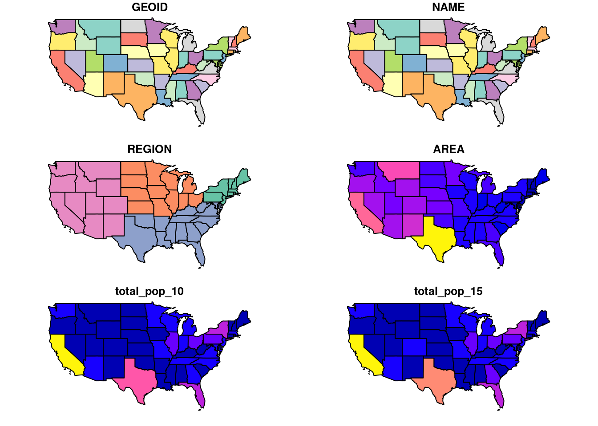

Figure 1: “The Georgia Negro. A Social Study by W.E.Burghardt Du Bois”. The original image from Dubois that is to be recreated
W.E.B. Dubois
Explain who he was
Recreating the plate
This
library(dplyr)library(showtext) # Custom fontslibrary(sf) # SF requires GDAL to be installed. Read packages' info with instructions.df_birthplace <-read.csv("https://raw.githubusercontent.com/ajstarks/dubois-data-portraits/master/plate08/birthplace.csv")df_current <-read.csv("https://github.com/ajstarks/dubois-data-portraits/raw/master/plate08/present.csv")dubois_df <- df_current |>left_join(df_birthplace, by =join_by(State)) |>rename_with(tolower)# Explore the datadubois_df |>head() |> knitr::kable()
Table 1: WEB Dubois’ data, combined in a single dataframe.
state
present.location
birthplace
CA
254
NA
AZ
48
NA
NM
38
1
OK
68
9
TX
12016
99
LA
6025
144
Excellent! But regretfully, this is not all the data that we need. We need another dataset with the
library(spData) # Provides several geospatial datasets, such as the USA.data("us_states")head(us_states)
Simple feature collection with 6 features and 6 fields
Geometry type: MULTIPOLYGON
Dimension: XY
Bounding box: xmin: -114.8136 ymin: 24.55868 xmax: -71.78699 ymax: 42.04964
Geodetic CRS: NAD83
GEOID NAME REGION AREA total_pop_10 total_pop_15
1 01 Alabama South 133709.27 [km^2] 4712651 4830620
2 04 Arizona West 295281.25 [km^2] 6246816 6641928
3 08 Colorado West 269573.06 [km^2] 4887061 5278906
4 09 Connecticut Norteast 12976.59 [km^2] 3545837 3593222
5 12 Florida South 151052.01 [km^2] 18511620 19645772
6 13 Georgia South 152725.21 [km^2] 9468815 10006693
geometry
1 MULTIPOLYGON (((-88.20006 3...
2 MULTIPOLYGON (((-114.7196 3...
3 MULTIPOLYGON (((-109.0501 4...
4 MULTIPOLYGON (((-73.48731 4...
5 MULTIPOLYGON (((-81.81169 2...
6 MULTIPOLYGON (((-85.60516 3...
This provides us with interesting information and beteersweet news: The good news is that there’s a column named geometry that means that the us_states object, is not a regular data frame, but is actually a spatial object:
class(us_states)
[1] "sf" "data.frame"
We can view its geometry calling the plot() function from base R
plot(us_states)

Figure 2: US data (without Alaska) provided by spData package.
This is useful because we could combine (join) that geometry with the data in dubois_df. However, here come the bad news: in order to do that, we’d need a shared variable, and there is none. While both datasets refer to the same states, dubois_df uses their code names, whereas us_states has their full names.
We can overcome that with relative ease by combining a dataset that translates code names into full names:
# Data from: https://worldpopulationreview.com/states/state-abbreviationsstates_dic <-read.csv("data/us_states_names.csv")states_dic |>head() |> knitr::kable()
Table 2: An intermediate dataset containing USA states’ names and codes.
Table 3: Dubois’ data, now with the states’ full name.
code
present.location
birthplace
state
abbrev
CA
254
NA
California
Calif.
AZ
48
NA
Arizona
Ariz.
NM
38
1
New Mexico
N.M.
OK
68
9
Oklahoma
Okla.
TX
12016
99
Texas
Tex.
LA
6025
144
Louisiana
La.
And we can join the data with the corresponding geometry:
dubois_sdf <- us_states |>left_join(dubois_df, by =c("NAME"="state"))
Warning in sf_column %in% names(g): Each row in `x` is expected to match at most 1 row in `y`.
ℹ Row 12 of `x` matches multiple rows.
ℹ If multiple matches are expected, set `multiple = "all"` to silence this
warning.
dubois_sdf
Simple feature collection with 50 features and 10 fields
Geometry type: MULTIPOLYGON
Dimension: XY
Bounding box: xmin: -124.7042 ymin: 24.55868 xmax: -66.9824 ymax: 49.38436
Geodetic CRS: NAD83
First 10 features:
GEOID NAME REGION AREA total_pop_10 total_pop_15 code
1 01 Alabama South 133709.27 [km^2] 4712651 4830620 AL
2 04 Arizona West 295281.25 [km^2] 6246816 6641928 AZ
3 08 Colorado West 269573.06 [km^2] 4887061 5278906 CO
4 09 Connecticut Norteast 12976.59 [km^2] 3545837 3593222 CT
5 12 Florida South 151052.01 [km^2] 18511620 19645772 FL
6 13 Georgia South 152725.21 [km^2] 9468815 10006693 GA
7 16 Idaho West 216512.66 [km^2] 1526797 1616547 ID
8 18 Indiana Midwest 93648.40 [km^2] 6417398 6568645 IN
9 20 Kansas Midwest 213037.08 [km^2] 2809329 2892987 KS
10 22 Louisiana South 122345.76 [km^2] 4429940 4625253 LA
present.location birthplace abbrev geometry
1 24556 6720 Ala. MULTIPOLYGON (((-88.20006 3...
2 48 NA Ariz. MULTIPOLYGON (((-114.7196 3...
3 285 NA Colo. MULTIPOLYGON (((-109.0501 4...
4 97 13 Conn. MULTIPOLYGON (((-73.48731 4...
5 3981 3198 Fla. MULTIPOLYGON (((-81.81169 2...
6 798747 798747 Ga. MULTIPOLYGON (((-85.60516 3...
7 7 1 Idaho MULTIPOLYGON (((-116.916 45...
8 193 21 Ind. MULTIPOLYGON (((-87.52404 4...
9 480 6 Kans. MULTIPOLYGON (((-102.0517 4...
10 6025 144 La. MULTIPOLYGON (((-92.01783 2...
One of the aims of the challenge is to recreate Dubois plates using modern tools, in this years, not only new tools have appeared, there are also different visualisation types.
Tackett, Maria, and Mine Çetinkaya-Rundel. 2023. “Analyzing and Recreating Data Visualizations of w.e.b. Du Bois.”CHANCE 36 (1): 40–47. https://doi.org/10.1080/09332480.2023.2179279.
Citation
BibTeX citation:
@online{cámara-menoyo2023,
author = {Carlos Cámara-Menoyo},
title = {Migration {Maps}},
date = {2023-03-16},
url = {https://datalab.carloscamara.es//posts/2023-03-08_dubois-challenge-migration},
langid = {en}
}
![]()